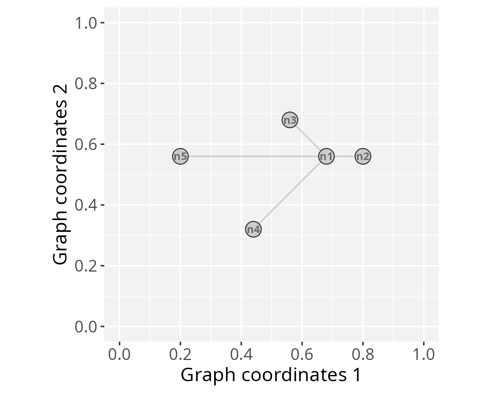
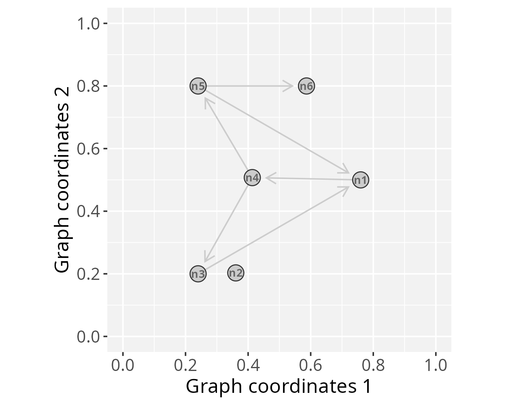
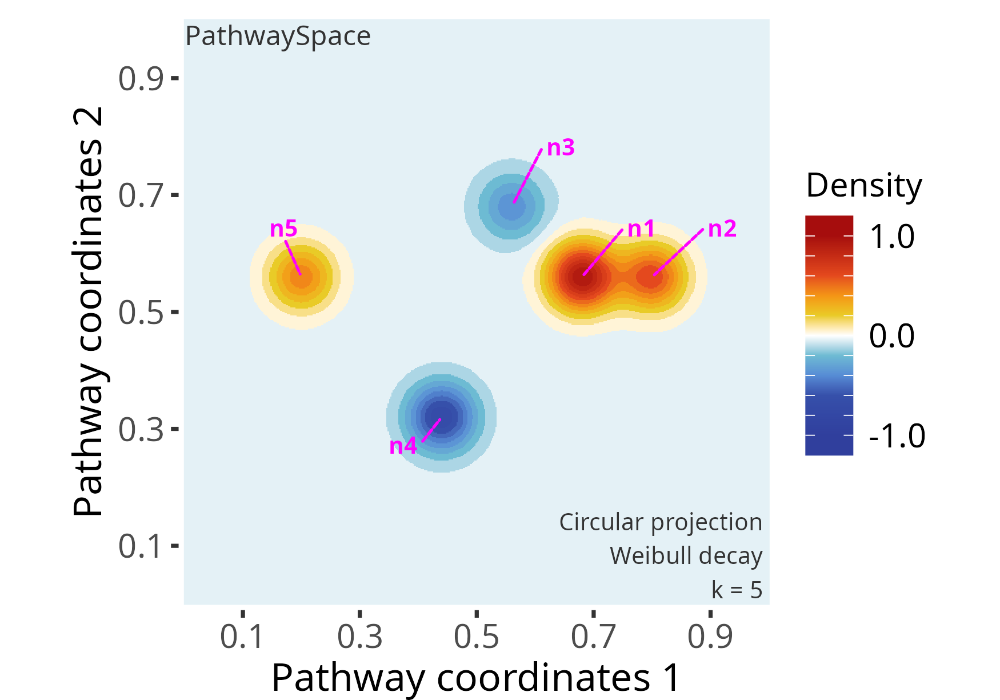

Getting started with PathwaySpace
Sysbiolab Team
2025-09-25
Package: PathwaySpace 1.0.3
Setting basic input data
#--- Load required packages for this section
library(igraph)
library(ggplot2)
library(RGraphSpace)
library(PathwaySpace)This section will create an igraph object containing a
binary signal associated to each vertex. The graph layout is configured
manually to ensure that users can easily view all the relevant arguments
needed to prepare the input data for the PathwaySpace package.
The igraph’s make_star() function creates a
star-like graph and the V() function is used to set
attributes for the vertices. The PathwaySpace package will
require that all vertices have x, y, and
name attributes.
# Make a 'toy' igraph object, either a directed or undirected graph
gtoy1 <- make_star(5, mode="undirected")
# Assign 'x' and 'y' coordinates to each vertex
# ..this can be an arbitrary unit in (-Inf, +Inf)
V(gtoy1)$x <- c(0, 2, -2, -4, -8)
V(gtoy1)$y <- c(0, 0, 2, -4, 0)
# Assign a 'name' to each vertex (here, from n1 to n5)
V(gtoy1)$name <- paste0("n", 1:5)Checking graph validity
Next, we will create a GraphSpace-class object using the
GraphSpace() constructor. This function will check the
validity of the igraph object. For this example
mar = 0.2, which sets the outer margins as a fraction of
the 2D space on which the convolution operation will project the
signal.
# Check graph validity
g_space1 <- GraphSpace(gtoy1, mar = 0.2)Our graph is now ready for the PathwaySpace package. We can
check its layout using the plotGraphSpace() function.
# Check the graph layout
plotGraphSpace(g_space1, add.labels = TRUE)
Creating a PathwaySpace object
Next, we will create a PathwaySpace-class object using the
buildPathwaySpace() constructor. This will calculate
pairwise distances between vertices, subsequently required by the signal
projection methods.
# Run the PathwaySpace constructor
p_space1 <- buildPathwaySpace(g_space1)As a default behavior, the buildPathwaySpace()
constructor initializes the signal of each vertex as 0. We
can use the length(), names(), and
vertexSignal() accessors to get and set vertex signals in
the PathwaySpace object; for example, in order to get vertex
names and signal values:
# Check the number of vertices in the PathwaySpace object
length(p_space1)
## [1] 5
# Check vertex names
names(p_space1)
## [1] "n1" "n2" "n3" "n4" "n5"
# Check signal (initialized with '0')
vertexSignal(p_space1)
## n1 n2 n3 n4 n5
## 0 0 0 0 0…and for setting new signal values in PathwaySpace objects:
# Set new signal to all vertices
vertexSignal(p_space1) <- c(1, 4, 2, 4, 3)
# Set a new signal to the 1st vertex
vertexSignal(p_space1)[1] <- 2
# Set a new signal to vertex "n1"
vertexSignal(p_space1)["n1"] <- 6
# Check updated signal values
vertexSignal(p_space1)
## n1 n2 n3 n4 n5
## 6 4 2 4 3Signal projection
Circular projection
Following that, we will use the circularProjection()
function to project the network signals, setting
pdist = 0.4. This term determines a distance unit for the
signal convolution, affecting the extent over which the convolution
operation projects the signal. For example, when pdist = 1,
it will represent the diameter of the inscribed circle within the
coordinate space. We also set k = 1, which defines the
contributing vertices for signal convolution. In this case, each
null-signal position will receive the projection from a single
vertex-signal position (i.e. the highest signal
intensity in pathway space reaching that position). We then create a
landscape image using the plotPathwaySpace() function.
# Run signal projection
p_space1 <- circularProjection(p_space1, pdist = 0.4, k = 1)
# Plot a PathwaySpace image
plotPathwaySpace(p_space1, add.marks = TRUE)
Next, we reassess the same PathwaySpace object, using
pdist = 0.2, k = 2 and adjusting the
shape of the decay function, which is passed to the
circularProjection() function via decay.fun
argument.
# Re-run signal projection, adjusting Weibull's shape
p_space1 <- circularProjection(p_space1, pdist = 0.2, k = 2,
decay.fun = signalDecay(shape = 2))
# Plot PathwaySpace
plotPathwaySpace(p_space1, marks = "n1", theme = "th2")
The shape parameter allows a projection to take a
variety of shapes. When shape = 1 the projection follows an
exponential decay, and when shape > 1 the projection is
first convex, then concave with an inflection point along the decay
path.
Polar projection
In this section we will project the network signal using a polar
coordinate system. This representation may be useful for certain types
of data, for example, to highlight patterns of signal propagation on
directed graphs, especially to explore the orientation aspect of signal
flow. To demonstrate this feature we will used the gtoy2
directed graph, available in the RGraphSpace package.
# Load a pre-processed directed igraph object
data("gtoy2", package = "RGraphSpace")
# Check graph validity
g_space2 <- GraphSpace(gtoy2, mar = 0.2)# Check the graph layout
plotGraphSpace(g_space2, add.labels = TRUE)
# Build a PathwaySpace for the 'g_space2'
p_space2 <- buildPathwaySpace(g_space2)
# Set '1s' as vertex signal
vertexSignal(p_space2) <- 1For fine-grained modeling of signal decay, the
vertexDecay() accessor allows assigning decay functions at
the level of individual vertices. For example, adjusting Weibull’s
shape argument for node n6:
# Modify decay function
# ..for all vertices
vertexDecay(p_space2) <- signalDecay(shape=2)
# ..for individual vertices
vertexDecay(p_space2)[["n6"]] <- signalDecay(shape=3)Next, we run the signal projection using polar coordinates. The
beta exponent will control the angular span; for values
greater than zero, beta will progressively narrow the
projection along the edge axis. Also, in the
polarProjection() function, the pdist term
will define a distance unit related to edge length, aiming to constrain
signal projections within edge bounds. Here we set
pdist = 1 to reach full edge lengths.
# Run signal projection using polar coordinates
p_space2 <- polarProjection(p_space2, pdist = 1, beta = 10)
# Plot PathwaySpace
plotPathwaySpace(p_space2, theme = "th2", add.marks = TRUE)
Note that this projection distributes signals on the edges regardless
of direction. To incorporate edge orientation, we set
directional = TRUE, which channels the projection along the
paths:
# Re-run signal projection using 'directional = TRUE'
p_space2 <- polarProjection(p_space2, pdist = 1, beta = 10, directional = TRUE)
# Plot PathwaySpace
plotPathwaySpace(p_space2, theme = "th2", marks = c("n1","n3","n4","n5"))
This PathwaySpace polar projection emphasizes the signal flow along the directional pattern of a directed graph (see the igraph plot above). When interpreting, users should note that this approach introduces simplifications; for example, depending on the network topology, the polar projection may fail to capture complex features of directed graphs, such as cyclic dependencies, feedforward and feedback loops, or other intricate interactions.
Signal types
The PathwaySpace accepts binary, integer, and numeric signal
types, including NAs. If a vertex signal is assigned with
NA, it will be ignored by the convolution algorithm.
Logical values are also allowed, but it will be treated as binary. Next,
we show the projection of a signal that includes negative values, using
the p_space1 object created previously.
# Set a negative signal to vertices "n3" and "n4"
vertexSignal(p_space1)[c("n3","n4")] <- c(-2, -4)
# Check updated signal vector
vertexSignal(p_space1)
# n1 n2 n3 n4 n5
# 6 4 -2 -4 3
# Re-run signal projection
p_space1 <- circularProjection(p_space1, decay.fun = signalDecay(shape = 2))
# Plot PathwaySpace
plotPathwaySpace(p_space1, bg.color = "white", font.color = "grey20", add.marks = TRUE, mark.color = "magenta", theme = "th2")
Note that the original signal vector was rescale to
[-1, +1]. If the signal vector is >=0, then
it will be rescaled to [0, 1]; if the signal vector is
<=0, it will be rescaled to [-1, 0]; and if
the signal vector is in (-Inf, +Inf), then it will be
rescaled to [-1, +1]. To override this signal processing,
simply set rescale = FALSE in the projection function.
Citation
If you use PathwaySpace, please cite:
Tercan & Apolonio et al. Protocol for assessing distances in pathway space for classifier feature sets from machine learning methods. STAR Protocols 6(2):103681, 2025. https://doi.org/10.1016/j.xpro.2025.103681
Ellrott et al. Classification of non-TCGA cancer samples to TCGA molecular subtypes using compact feature sets. Cancer Cell 43(2):195-212.e11, 2025. https://doi.org/10.1016/j.ccell.2024.12.002
Session information
## R version 4.5.1 (2025-06-13)
## Platform: x86_64-pc-linux-gnu
## Running under: Ubuntu 24.04.3 LTS
##
## Matrix products: default
## BLAS: /usr/lib/x86_64-linux-gnu/openblas-pthread/libblas.so.3
## LAPACK: /usr/lib/x86_64-linux-gnu/openblas-pthread/libopenblasp-r0.3.26.so; LAPACK version 3.12.0
##
## locale:
## [1] LC_CTYPE=en_US.UTF-8 LC_NUMERIC=C
## [3] LC_TIME=en_US.UTF-8 LC_COLLATE=en_US.UTF-8
## [5] LC_MONETARY=en_US.UTF-8 LC_MESSAGES=en_US.UTF-8
## [7] LC_PAPER=en_US.UTF-8 LC_NAME=C
## [9] LC_ADDRESS=C LC_TELEPHONE=C
## [11] LC_MEASUREMENT=en_US.UTF-8 LC_IDENTIFICATION=C
##
## time zone: America/Sao_Paulo
## tzcode source: system (glibc)
##
## attached base packages:
## [1] stats graphics grDevices utils datasets methods base
##
## other attached packages:
## [1] PathwaySpace_1.0.3 RGraphSpace_1.1.0 ggplot2_3.5.2.9001 igraph_2.1.4
##
## loaded via a namespace (and not attached):
## [1] vctrs_0.6.5 cli_3.6.5 knitr_1.50 rlang_1.1.6
## [5] xfun_0.53 ggrepel_0.9.6 generics_0.1.4 S7_0.2.0
## [9] jsonlite_2.0.0 glue_1.8.0 htmltools_0.5.8.1 sass_0.4.10
## [13] scales_1.4.0 rmarkdown_2.29 grid_4.5.1 tibble_3.3.0
## [17] evaluate_1.0.5 jquerylib_0.1.4 fastmap_1.2.0 yaml_2.3.10
## [21] lifecycle_1.0.4 compiler_4.5.1 dplyr_1.1.4 RColorBrewer_1.1-3
## [25] Rcpp_1.1.0 pkgconfig_2.0.3 rstudioapi_0.17.1 farver_2.1.2
## [29] digest_0.6.37 R6_2.6.1 RANN_2.6.2 tidyselect_1.2.1
## [33] pillar_1.11.0 magrittr_2.0.4 bslib_0.9.0 withr_3.0.2
## [37] tools_4.5.1 gtable_0.3.6 cachem_1.1.0